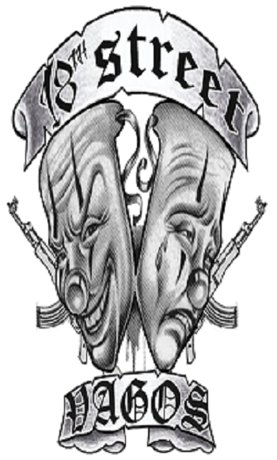

18th Street gang

18th Street Gang, также известная как Calle 18, Barrio 18, La18 или Mara-18 в Центральной Америке, — мультиэтническая международная преступная группировка, состоящая в основном из латиноамериканцев, первоначально возникшая в 1960-х годах как уличная банда в районе Рэмпарт американского города Лос-Анджелес в штате Калифорния. Считается крупнейшей международной преступной группировкой в Лос-Анджелесе: предполагается, что только в одном округе Лос-Анджелес насчитывается более 10 тысяч бандитов этой группировки. Банда с 18-й стрит является хорошо организованной группировкой, вовлеченной во все области уличной преступной деятельности. Главный источник дохода группировки — уличная торговля кокаином и марихуаной, также их деятельность включает в себя убийства, заказные убийства, вымогательство, незаконный оборот наркотиков, незаконная иммиграция, нападения, торговля людьми, квартирные и автомобильные кражи, ограбления, торговля оружием и другие преступления. По словам специального агента Джорджа Родригеса, эта группировка является одной из самых жестоких уличных банд в Соединенных Штатах. В среднем каждый день в округе Лос-Анджелес бандитами из этой группировки совершается нападение или ограбление. Группировка совершила больше чем 250 убийств в городе Лос-Анджелес за прошлые 10 лет — в три раза больше, чем многие самые активные банды города. Согласно последним данным от NDIC, существует приблизительно 200 отдельных автономных «бригад» Банды с 18-й стрит, действующих в Долине Сан-Фернандо, Долине Сан-Габриэля, Южном заливе, Восточном Лос-Анджелесе, Южном Лос-Анджелесе, в Центральном Лос-Анджелесе, Центре города, Союзе Пико, Инглвуде, Кадахи, Линвуде, Саут-Гейт, Хантингтон-Парке, Мэйвуде и округе Ориндж. Большинство «бригад» 18-й стрит, действующих всюду по южной Калифорнии, были созданы участниками банды из Лос-Анджелеса, мигрирующих в другие области и основывающих собственные бригады. Восемнадцатая улица стала самой многочисленной и наиболее быстро растущей бандой в Орегоне. «Бригады» 18-й стрит действуют в 11 странах, в том числе в Мексике, Сальвадоре, Гондурасе и Гватемале и в 120 городах 37 штатов США, в частности в Округе Колумбия. Некоторые «бригады»: голливудские Гангстеры, Гангстеры Pico, 106-й Блок, CLCS (Колумбия Лил Кайкос), Великое Представление, парк Mac Arthur, Смайл-Драйв, парк Shatto, Центральный Юг, парк Rancho, Cudahy, Malditos в округе Ориндж, также существует женская «бригада». В округе Лос-Анджелес действуют около 15 000 участников Банды с 18-й стрит, причем они разделены на две фактически независимые крупные группировки. В мае 2013 года после восьми месяцев переговоров в гондурасском городе Сан-Педро-Сула было заключено перемирие между Mara Salvatrucha и M-18, гарантами которого выступили местный епископ и Организация американских государств. Союзниками Банды с 18-й стрит являются Мексиканская мафия и наркокартель Лос-Сетас, противниками — Bloods, Clanton 14 и Mara Salvatrucha.